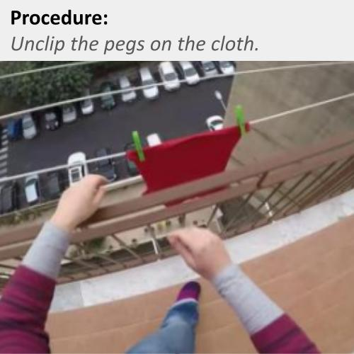
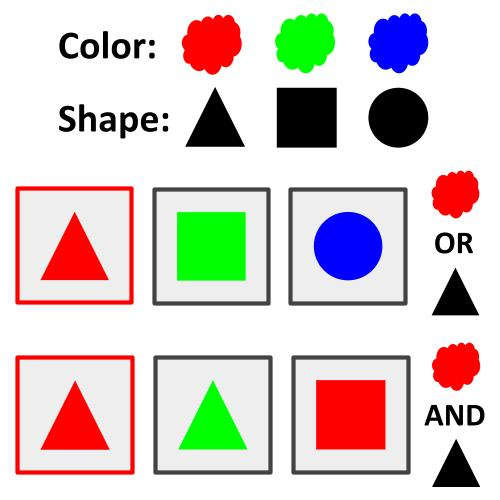
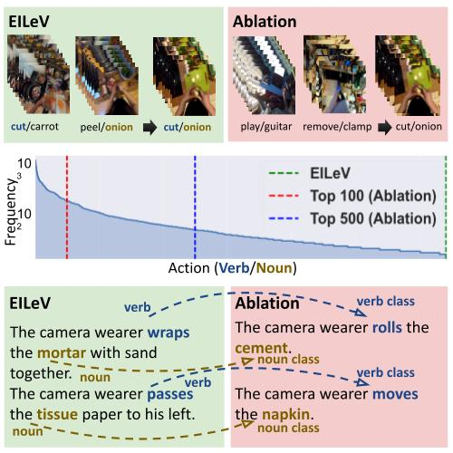
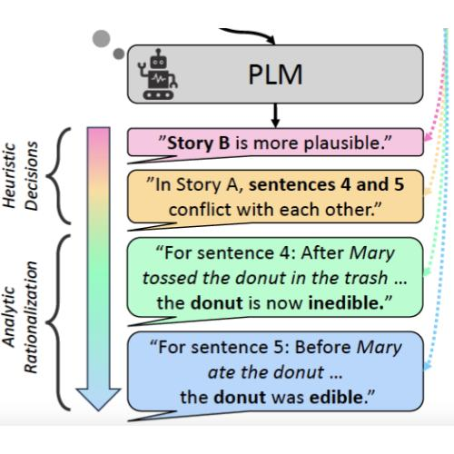
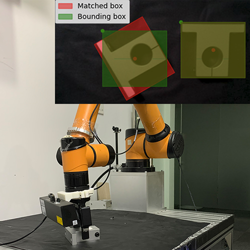

International Conference on Learning Representations (ICLR), 2026

Conference on Neural Information Processing Systems (NeurIPS), 2025

International Conference on Learning Representations (ICLR), 2025 (Oral)

International Conference on Learning Representations (ICLR), 2025

MAS Workshop @ ICML, 2025


International Conference on Computational Linguistics (COLING), 2025

Conference on Empirical Methods in Natural Language Processing (EMNLP), 2024

Conference on Empirical Methods in Natural Language Processing (EMNLP), 2023

IEEE International Conference on Networking Systems of AI (INSAI), 2021 (Second Prize)